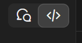

Pre-boarding: setting up Discord, Claude and GitHub
01Discord: talk to us and to your team
02Claude Code on your laptop
03GitHub: your team's shared folder
04Start on your team's research idea
How to use this guide
Why: if everyone's laptop is set up before 30 November, we can start on the research right away on the day.
The guide assumes you have never used Claude, GitHub or Discord. Then it takes about 45 minutes; if you already use them, it's much quicker. Do it on the laptop you will bring on 30 November.
Most slides have one of two labels at the top, just above the title:
Setup
Something to do: install, sign in, click. Already done it? At the bottom of the slide there's a pink link, like Skip to the checkpoint →. Click it to jump ahead.
Checkpoint
A test that everything works. Everyone does these, also if you skipped the setup. Click each box to tick it, and move on once they're all ticked.
Move with the arrow keys or the arrows in the corner. Stuck for more than 10 minutes? Post a screenshot in #technical-help on Discord.
The schedule
NowPre-boarding: this guide, at your own pace.
Tue 24 Nov, 15:15Onboarding meeting: the day, the code of conduct and your team's idea. In Å93108, where we stay afterwards to help anyone whose setup isn't working, or online on Zoom (the link is in the email). There will also be a recording.
24–29 NovYour team agrees on a research idea, with Claude, GitHub and Discord.
Mon 30 Nov, 09:00–17:00The hackathon in Å4002, Ångström Laboratory.
The teams
You will work on your team's research idea together before the day, so get to know them on Discord. The P-number next to your name is your participant ID; you'll use it on the day.
What you need
The laptop you will bring on 30 November
Your Claude login: the account on your group's plan, or the one Alena gave you. (The free Claude plan does not include Claude Code.)
To know whether you have admin rights on the laptop: can you install programs yourself? If you're not sure, the next steps tell you what to do either way.
About 45 minutes
You will also make a Discord account and a GitHub account on the way, if you don't have them.
Part 1
Discord
A chat app. It's where we send news, where you ask for help, and where your team talks before and during the day.
Setup
Join our Discord server
Open the invite link: discord.gg/4ftchxfwvNo Discord account yet? The link lets you make one. You can use Discord in the browser or install the app.
Accept the invitation to Many Body Intelligence 2026.
In #welcome, post a short intro: who you are, your research group and your hackathon team.
In #team-selection, choose your team. You'll then see your team's channel.
Checkpoint: before you go on, make sure all of these are true. Click each box to tick it.
Your intro is in #welcome
You can see your team's channel
You know where #technical-help is
Part 2
Claude Code
Claude is an AI assistant. Claude Code is the version that can work with the files on your laptop: read them, write them and run programs, when you allow it. That's the one we use, so the browser version of Claude is not enough.
Setup
Which way do you install it?
Click the box that matches your laptop: its operating system, and whether you can install programs yourself (admin rights).
Not sure about admin rights? Try the first way. If Windows asks for an administrator password you don't have, use the second.
You can also ask IT services for admin rights; that needs the OK of the Head of Department.
Download the app from claude.com/download and double-click the downloaded file.
On a Mac this opens a small window with the Claude icon and an Applications folder: drag the icon onto the folder. That's how Mac apps are installed. Then open Claude from Applications.
Open Claude and sign in with your Claude account.
None of the organisers has a Mac, so we haven't tried these steps ourselves. If something looks different, post a screenshot in #technical-help, or use VS Code with the Claude Code extension instead (the Linux steps work on a Mac too).
Claude often opens in Chat, the ordinary conversation mode. You need Code. The switch is two small icons, easy to miss: the speech bubble is Chat, </> is Code. Click </>.
You're in the right place when Claude asks which folder to work in, or shows a folder at the bottom of the window.
In VS Code, check this too: if the Claude panel shows the same two icons, pick </>.

Chat (speech bubble) and Code (</>, selected)
Setup
Your hackathon folder
Make a folder called MBI-2026, for example in Documents or on your Desktop. Everything you make for the hackathon lives here.
Open it in Claude Code:
Claude app: in Code, choose MBI-2026 as the folder to work in. VS Code: File → Open Folder → MBI-2026, then click "Yes, I trust the authors" (Claude Code doesn't work in VS Code's Restricted Mode).
Setup
Claude asks before it acts
Claude Code can change files and run programs on your laptop, so it asks first. You will see small boxes like "Allow Claude to run this command?" or "Allow this edit?".
Read what it wants to do. If it matches what you asked for, allow it.
If you don't understand it, choose no and ask Claude: "What does that do, and why do you need it?"
Nothing happens on your laptop without your OK, so you can't break anything by saying no.
Checkpoint 2
Claude Code works
Checkpoint: before you go on, make sure all of these are true. Click each box to tick it.
Copy this into Claude Code and send it:
Which folder are you working in? Then fetch https://manybodyintelligence2026.github.io and tell me the heading of that page.
Claude names your MBI-2026 folder
It answers MANY-BODY INTELLIGENCE 2026, so it can reach the internet
Part 3
GitHub
A website for sharing folders of files (called repositories). Each team gets one, private to the team. It's how your team's Claudes share work: everyone's Claude reads and writes the same folder.
Setup
Account and invitation
Use the GitHub account whose username you gave us on the sign-up form. (No account? Make one at github.com/signup and tell us the username in #technical-help.)
We invite you to the manybodyintelligence2026 organisation and your team's repository. The invitation comes by email: accept it.
Your team's repository is called team1, team2, ... : github.com/manybodyintelligence2026/teamN. You can only see your own team's.
A token is a password for programs. It lets Claude open your team's repository for you. On GitHub, go to:
Profile picture → Settings → Developer settings → Personal access tokens → Fine-grained tokens → Generate new token
Token nameMBI 2026
Resource ownermanybodyintelligence2026appears once you've accepted the invitation
Expiration30 days
Repository accessAll repositories
PermissionsContents: Read and writeunder "Repository permissions"
Then Generate token and copy it. GitHub shows it only once.
Setup
Keep the token safe
Paste it into a text file, for example Documents\github-token.txt.
Keep that file outside the MBI-2026 folder, so it can never end up in your team's repository.
Don't paste the token into a chat, an email or a Discord message.
It stops working after 30 days. Delete the file after the hackathon.
If GitHub says the token is waiting for approval, tell us in #technical-help.
Setup
Connect Claude to GitHub
In Claude Code, in your MBI-2026 folder, fill in the three blanks and send:
I'm setting up for a hackathon. My GitHub token is saved in the file [path to your token file, e.g. C:\Users\you\Documents\github-token.txt]. Please:
1. Check whether git is installed. If it isn't, help me install it (on a university Windows laptop without admin rights it may have to come from the Software Centre).
2. Using the token, clone https://github.com/manybodyintelligence2026/[teamN] into this folder. Save the token with git's credential manager so I don't need it again. Don't write the token into any file in this folder, and don't show it in your replies.
3. To check that you can push: in the repository, make a folder named [your first name] with a README.md saying who I am. Commit it and push it (pull first if the push is refused).
4. Give me the link to that folder on GitHub.
Checkpoint 3
GitHub works
Checkpoint: before you go on, make sure all of these are true. Click each box to tick it.
Your team's repository is now a folder inside MBI-2026
Claude's link opens your folder on GitHub, in your team's repository
Your teammates' folders show up there too, once they've done the same (next slide)
What your team's repository looks like
At github.com/manybodyintelligence2026/teamN, after everyone in a team of three has done the pre-boarding:
We may add more files before the day. That's fine: leave them as they are.
Part 4
Your team's research idea
Before 30 November, your team agrees on what to work on. Teams are welcome to bring their own idea.
This part is for teams that we put together, or where you don't yet know each other's expertise: Claude reads about all of you and suggests projects that draw on everyone. More at the onboarding meeting on Tuesday.
Claude uses this to see what each of you can bring. Fill in the template, or ask Claude to draft it from your papers or web page and check what it writes.
[Full name] is a [PhD student / postdoc / researcher / ...] in [group leader]'s group in the Department of Physics and Astronomy at Uppsala University (since [year]). [They are] a [condensed matter theorist / computational materials physicist / ...]. Before Uppsala, [earlier positions, and where you did your PhD, with whom and on what].
Research: [your main topics, a few words each].
Methods: [the methods and codes you use, e.g. DFT, tight-binding models, Monte Carlo, Green's functions, ...].
Setup
Add yourself to the idea folder
Claude also needs 2–3 of your papers as PDFs, as files (it works much better with files than with links). Use the prompt with one of the two PDF lines:
In our team repository, add me to the folder our-idea (make it if it isn't there yet):
- in our-idea/team.md, add this paragraph about me, under the heading [your first name]: [your paragraph]
- copy these PDFs into our-idea/papers/[your first name]/: [the paths of your PDFs]
OR: find 2-3 of my recent papers on arXiv (author: [your name]) and download the PDFs into our-idea/papers/[your first name]/
Then commit and push.
teamN/our-idea/
+-- team.md a paragraph each
+-- papers/
+-- name-1/2-3 PDFs
+-- name-2/
+-- name-3/
Checkpoint 4
Your part of the idea folder is in
Checkpoint: before you go on, make sure all of these are true. Click each box to tick it.
Your paragraph is in our-idea/team.md on GitHub, and your PDFs in our-idea/papers/
You've said hello in your team's Discord channel
When everyone is in, one of you asks Claude for project ideas that draw on the whole team. We'll show the prompt for that, and how to agree on an idea, at the onboarding meeting on Tuesday 24 November, 15:15 (Å93108 or Zoom).
On the day: keeping a record
Why: we're writing a paper about how AI was used at the event: what worked, what went wrong, and how results were checked. A logged failure is as useful to us as a success.
Your participant ID (P11, P12, ...): in your team's repository you use it instead of your name.
After each task, about 2 minutes: type /log-entry in Claude Code. Claude drafts what you asked and what came back; you answer five quick questions: did you use the result, who checked it, was there an error, what happened next, was it worth it.
Photos: at the end of each phase, photograph whiteboards and paper into the repository.
Transcripts are optional: you'll choose whether your Claude Code sessions are saved to your team's private repository. You can leave single sessions out, or withdraw them afterwards.
Nothing to do yet: we'll set this up together at the onboarding meeting.
Before Tuesday
Your four checkpoints. Click a box to tick it.
Checkpoint 1: on Discord, intro posted, team chosen
Checkpoint 2: Claude Code works in your MBI-2026 folder
Checkpoint 3: Claude can push to your team's repository
Checkpoint 4: you're in your team's idea folder
Stuck?Post a screenshot in #technical-help on Discord.OnboardingTuesday 24 November, 15:15, Å93108 or Zoom (link in the email), with a recording afterwards. We help with setup after the meeting.HackathonMonday 30 November, 09:00–17:00, Å4002